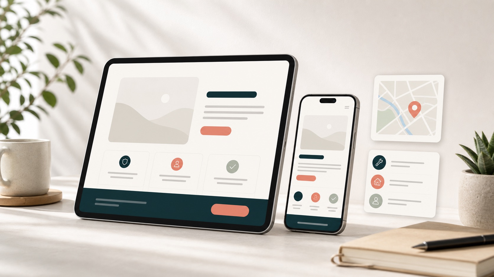

Apresentacao
Um resumo direto sobre quem atende, o que faz e para quem a pagina deve servir.
Conceito visual para Presenca Local em 72h
Este exemplo mostra como uma presenca oficial curta pode organizar apresentacao, servicos, regiao e primeiro contato sem virar um site grande ou sob medida.

A pagina funciona como um ponto unico para quem veio do Instagram, Google ou indicacao: entende o basico, ve o que precisa confirmar e encontra o caminho de contato.
Estrutura da pagina
Os blocos abaixo mostram a forma da entrega; os textos finais entram depois da confirmacao.
Um resumo direto sobre quem atende, o que faz e para quem a pagina deve servir.
De tres a seis servicos ou modalidades, em linguagem curta e facil de validar.
Bairro, cidade ou area de atendimento aparecem sem expor endereco que ainda nao foi aprovado.
Botao de WhatsApp ou agenda fica em destaque quando o canal final estiver confirmado.
Como ficaria o fluxo
O objetivo e reduzir duvida antes do contato, sem criar expectativa indevida ou sistema de agenda.
A pessoa entende rapidamente qual e a proposta do negocio.
Servicos e informacoes uteis ficam separados em blocos curtos.
Depois da confirmacao, o botao aponta para WhatsApp, agenda ou outro contato oficial.
Localizacao
Como o brief nao trouxe cidade, bairro ou endereco publico, esta demo usa uma area neutra. Na versao aprovada, este bloco pode mostrar cidade, bairro, mapa ou orientacao de atendimento.
Mapa ou regiao entram somente com dado publico autorizado.
Antes de publicar
Contato demonstrativo
Nesta demonstracao, o WhatsApp e apenas um marcador visual. Nenhum telefone real foi publicado.